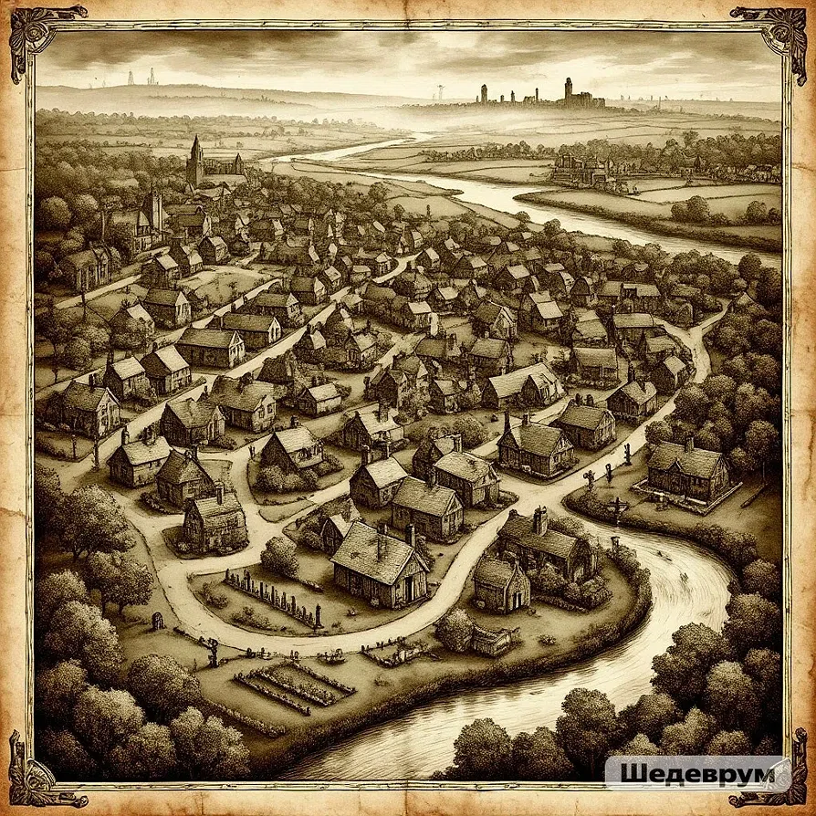

12 июня 1943
ЭПИДЕМИЯ В ПРИЮТЕ СВ. ЛЮЦИИ
Приют св. Люции закрыт по причинам, не разглашаемым общественности...
Читать →Архив города • 1943–1953
Маленький английский городок на краю мира. Туман, дождь, старая станция с часами, которые всегда показывают 3:33. Здесь пропадают люди. Здесь никто не задаёт вопросов. Здесь у каждого есть прошлое, о котором лучше не вспоминать.
Добро пожаловать в архив. Здесь собраны газетные вырезки, досье и карта города — всё то, что поможет вам в расследовании.
Нажмите на метку, чтобы узнать больше о локации.

Нажмите на метку на карте.
Выдержки из «Блэквудского вестника». Нажмите на статью, чтобы прочитать полностью.
Приют св. Люции закрыт по причинам, не разглашаемым общественности...
Читать →За последний год в Блэквуде пропали трое детей...
Читать →Медицинская комиссия не подтвердила слухи об эпидемии в приюте...
Читать →По нашим данным, в Блэквуд прибыл частный детектив Джеймс Харпер...
Читать →Церемония прощания с погибшими в приюте св. Люции прошла в закрытом режиме...
Читать →Статус: пропал без вести
Сын инспектора Моргана. В детстве дружил с Джеймсом Харпером. Последний раз видели в доме на Морнинг-лейн.
«Он смотрит через твои глаза.»
Статус: под подозрением
Городской врач. Работала в приюте св. Люции в 1943 году. Отказывается комментировать события прошлого.
«Наука требует жертв.»
Статус: свидетель
Отец Томаса. 27 лет в полиции Блэквуда. Скрывает информацию о пропавших.
«Правда в том, что я убил своего сына. Молчанием.»
Статус: неизвестен
Личность не установлена. Появляется в городе в момент кризиса. Говорит загадками.
«Я — то, что осталось. Или то, что ты забыл.»
Полная детективная история в Telegram. 6 глав, 3 концовки, живые персонажи.
▶ Начать расследование